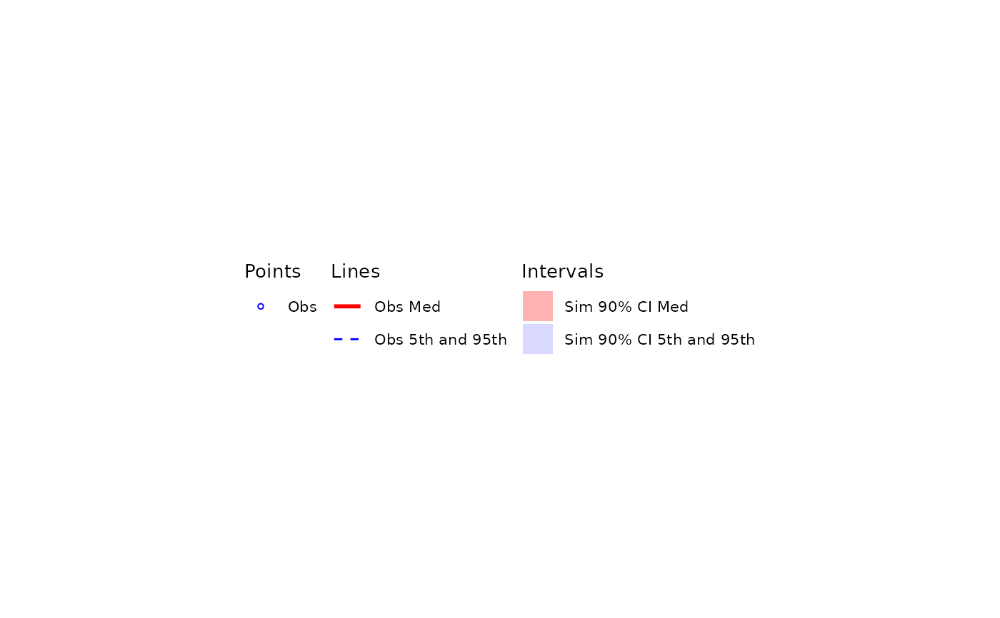
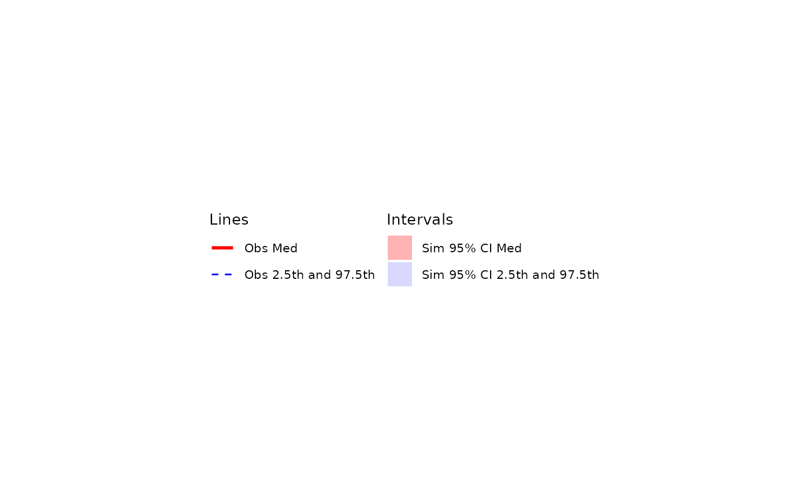
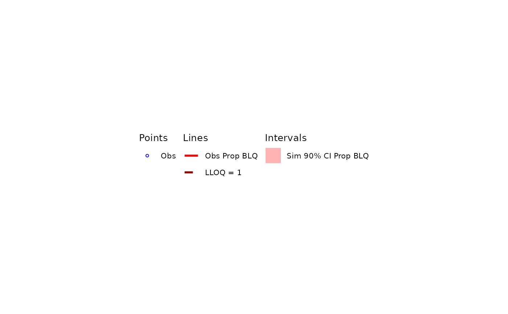

Plot a legend for a visual predictive check (VPC)
Arguments
- ci
Numeric confidence level for simulation intervals (e.g.,
0.90for 90% CI). Should match argument passed toplot_vpc_cont(). Default is0.90.- pi
prediction intervals plotted. Should match argument passed to
plot_vpc_cont(). Default is c(0.05, 0.95). Ignored whentype = "cens"(cens VPCs do not have prediction intervals).- shown
Layer visibility settings created by
plot_vpc_shown(). Defaults can be viewed by runningplot_vpc_shown()with no arguments.- lloq
Numeric scalar or vector of LLOQ values to label in the legend, or
NULLto omit. Each unique value becomes one legend entry rendered with the theme'sloq_linelinetype. Passcompute_out$config$loqfrom adf_vpcstats()result to mirror the reference lines drawn byplot_build_vpc().- theme
Named list of aesthetic parameters for the plot created by
plot_vpc_theme(). Defaults can be viewed by runningplot_vpc_theme()with no arguments.- type
One of
"cont"(default) or"cens". Selects the labels and layer set the legend describes. Under"cont", the central-tendency entries are labeled"Obs Med","Sim Med", and"Sim <ci>% CI Med"and the pi entries ("Obs <p1>th and <p2>th","Sim <p1>th - <p2>th","Sim <ci>% CI <p1>th and <p2>th") are included when theirshownkeys are on. Under"cens", the three central-tendency labels are relabeled to"Obs Prop BLQ","Sim Prop BLQ","Sim <ci>% CI Prop BLQ"and all pi-related entries are suppressed regardless ofshown(cens VPCs have no prediction interval).- ...
Other arguments passed to
ggplot2::theme().
Examples
plot_vpc_legend()

plot_vpc_legend(
pi = c(0.025, 0.975),
ci = 0.95,
shown = plot_vpc_shown(obs_point = FALSE, obs_pi_line = TRUE,
sim_pi_line = FALSE, sim_pi_area = FALSE, sim_pi_ci = TRUE,
obs_median_line = TRUE,
sim_median_line = FALSE, sim_median_ci = TRUE))

## Cens VPC legend
plot_vpc_legend(type = "cens", lloq = 1)
